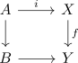
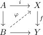
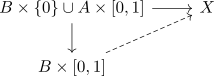
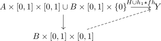
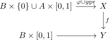

lift of serre fibration and cw inclusion and strictifying
Proposition
Let

be a strict commutative diagram, where
- $i: A \rightarrow B$ is a CW-Inclusion
- $f: X \rightarrow Y$ is a serre fibration
Suppose there exists a compatible lift up to homotopy

for the constant homotopy
Then we may find a strict lift
Proof
Let $h_0: A \times [0,1] \rightarrow X$ be a homotopy from $\varphi i$ to $g$, $h_1: B \times [0,1] \rightarrow Y$ a homotopy from $f \varphi$ to $k$ and
\begin{align*}
H: A \times [0,1] \times [0,1] \rightarrow Y
\end{align*}
a homotopy from the combined homotopy $h_1 i \star f h_0$ to the constant homotopy $h: A \times [0,1] \rightarrow Y$
Then consider the extension problem

which can be solved, since $A \rightarrow B$ is a hurewicz cofibration
TODO
Then we obtain a diagram

Then we can

solve by